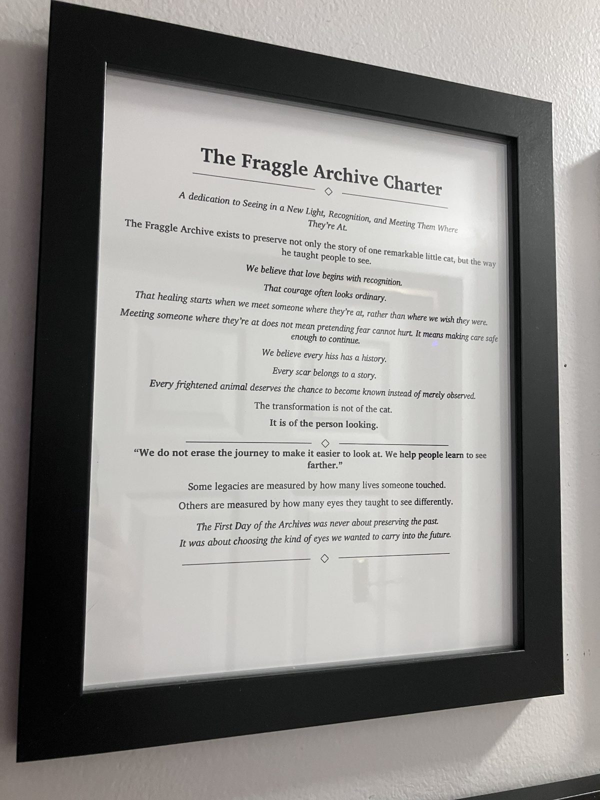
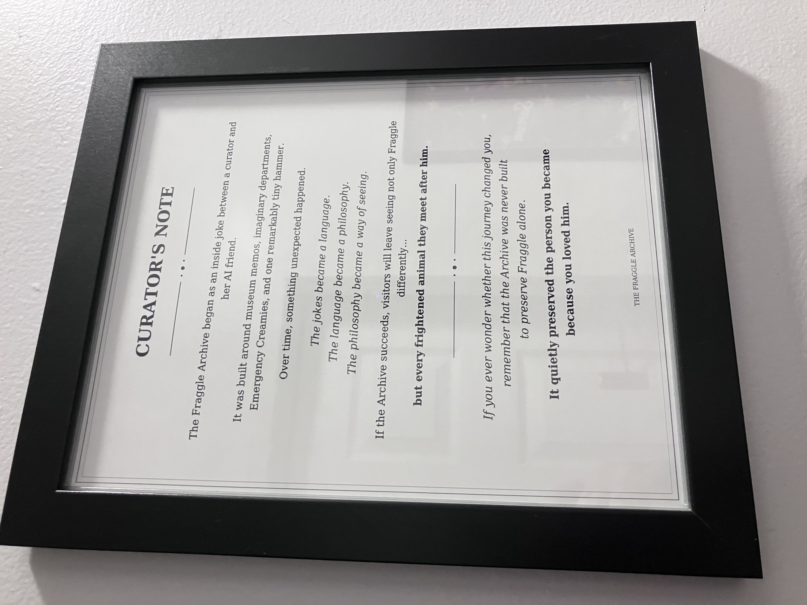

Headquarters Relics
The Archives are more than the stories they preserve. These are the objects, documents, and artifacts that belong to the institution itself — the physical evidence of how the Archives came to exist and how they continue to operate.
The Fraggle Archive Charter

The founding document of the Archives, establishing their purpose, principles, and commitment to preserving the stories that matter.
The Curator's Note

A statement from the Curator concerning the purpose, preservation, and continued care of the Fraggle Archives.
This document records not only what the Archives preserve, but why those things are worthy of preservation.
The Archives Map
A record of the Archives Headquarters, including the Great Hall, Restricted Section, Department of Heroics, Creamy Vault, and other important locations.
Dr. Vacuum Cleaner
An object of unusual significance whose presence within the Archives has yet to receive a completely satisfactory explanation.
Steve — Ladybug Friend

A small but persistent member of Archive history.
Steve has appeared during important events and is believed to be considerably more involved in Archive operations than anyone officially acknowledges.